首页
上一页
251
252
253
254
255
256
256
257
258
259
260
261
下一页
末页
defanive2
无尽黑夜
14
把物品模式的信号给到双边缘检测器
然后再给发射器，即可发射岩浆
怪物碰到岩浆后立即死亡，既是物品模式
PS 听说ztc喜欢男人，不知道是不是真的
——来自 MCLive
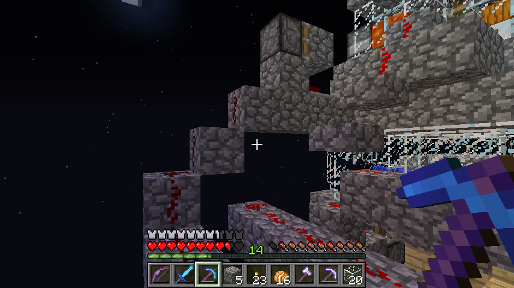
18789楼
2013-07-11 19:51
defanive2
无尽黑夜
14
接下来可以开启刷怪塔进行一次简单的测试了！
理论上全部怪物都会被烧死
PS ztc数学小课堂：3x8=？
——来自 MCLive
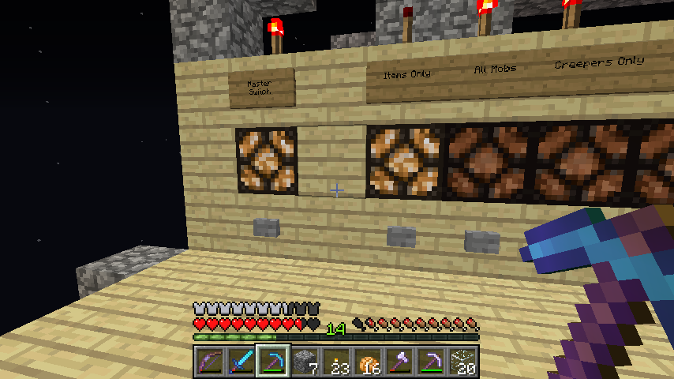
18792楼
2013-07-11 19:53
defanive2
无尽黑夜
14
鸭梨不大，物品模式非常简单
掉落的物品会被漏斗收集
下方也有一个漏斗，可以保证全部物品都会被收集
当然最后这些物品都会被送到物品分类器里面分类
PS 同城交友请咨询
@ztc囧儿
——来自 MCLive
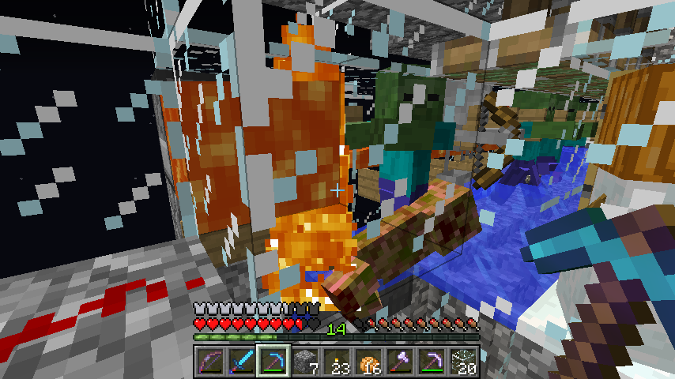
18794楼
2013-07-11 19:55
defanive2
无尽黑夜
14
一个刷怪循环的收获，还有一些物品被分流到其他漏斗了
总体来说非常满意
PS ztc和13订房去了
——来自 MCLive
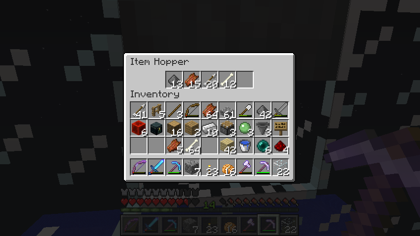
18796楼
2013-07-11 19:58
defanive2
无尽黑夜
14
不管怎么说，4个工作模式中的3个都已经完成了
为了防止ztc被我黑得太惨，这一段直播就先到这里了
休息一下，晚上再继续！
晚上估计会开始物品传输分类系统的建设
——来自 MCLive
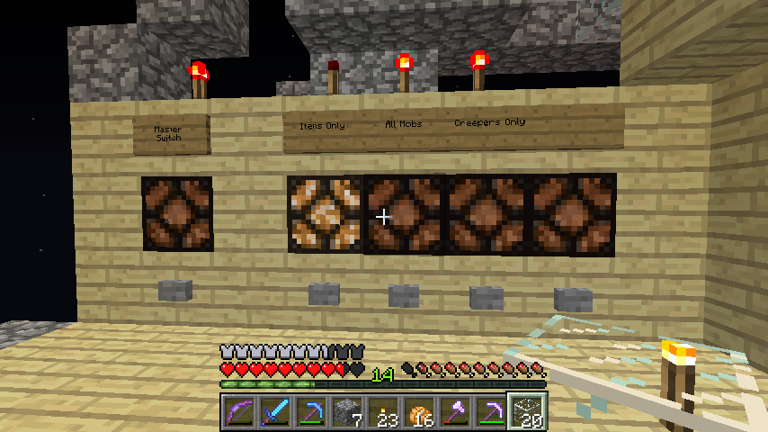
18797楼
2013-07-11 20:01
defanive2
无尽黑夜
14
今天又来直播啦！
比较深夜的直播，星期五了，该放松一下了！
——来自 MCLive
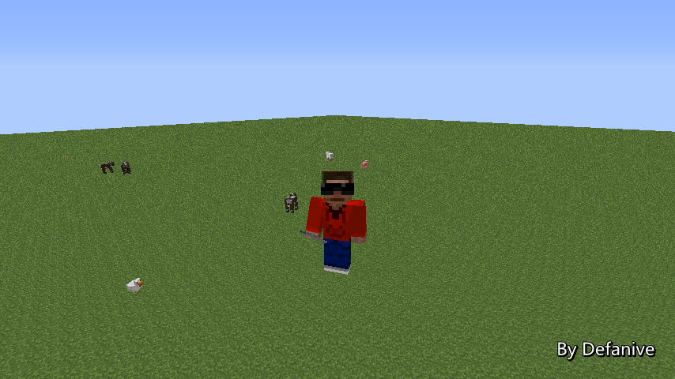
18899楼
2013-07-12 23:31
defanive2
无尽黑夜
14
今天我们仍然会继续我们的刷怪塔工程
左侧的控制面板基本完成之后，我们可以转移到中右侧了
物品的流水线，以及储存系统还未开工
今天我们就开始刷怪塔改造工程的一大部分吧！
PS 希望能在直播一周年前完成这个工程
——来自 MCLive
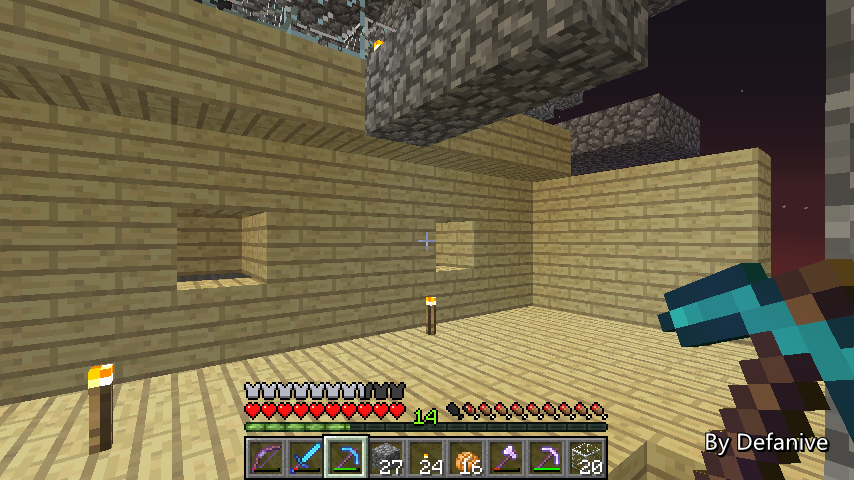
18901楼
2013-07-12 23:35
defanive2
无尽黑夜
14
不过在此之前需要先修理一下控制面板的电路
测试发现，控制面板的电路互相干扰了
不过更正难度并不高
——来自 MCLive
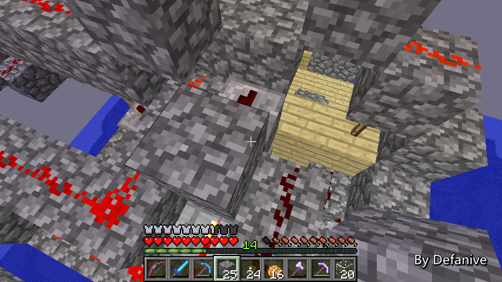
18902楼
2013-07-12 23:36
defanive2
无尽黑夜
14
中继器再次告罄，准备回家取材料
这个工程估计是最近几个大工程里面红石用量最高的了
当然，到了物品分类的部分会消耗更多的资源
——来自 MCLive
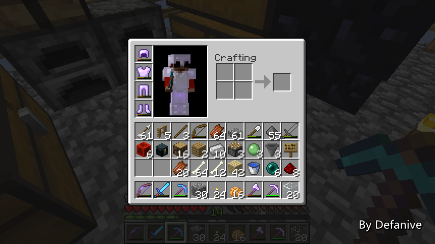
18903楼
2013-07-12 23:39
defanive2
无尽黑夜
14
中继器在生存里消耗3个红石
如果大量使用的话，红石储量还是挺受考验的
不过暂时还没有什么鸭梨
——来自 MCLive
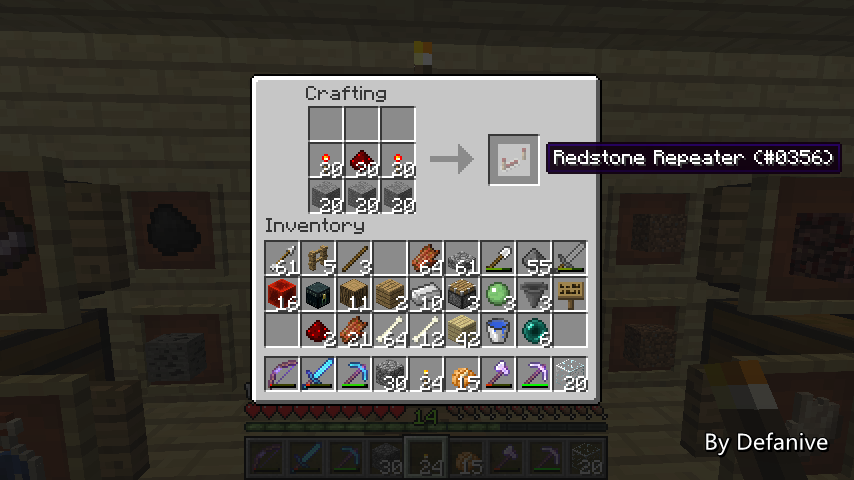
18904楼
2013-07-12 23:45
defanive2
无尽黑夜
14
解决方法非常简单
这样就可以错开两条线路了
虽然延迟有点不一致，不过无伤大雅
——来自 MCLive
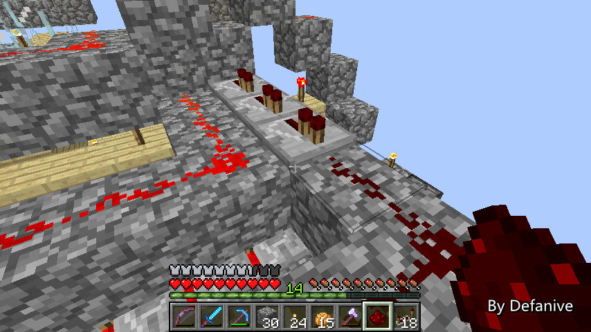
18905楼
2013-07-12 23:48
defanive2
无尽黑夜
14
经过之前的测试，还发现了一个物品模式的问题
有时候怪物被烧死之后物品会落到这个玻璃上
而导致无法被水源下方的漏斗收集
——来自 MCLive
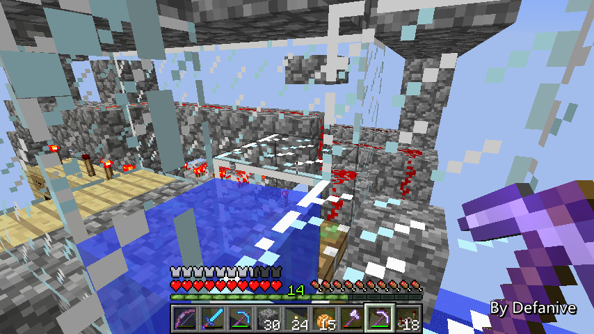
18906楼
2013-07-12 23:49
defanive2
无尽黑夜
14
解决方法也很简单
再加一个活塞控制玻璃，彻底封死即可
PS 电路已经比较混乱了
还好面板这边已经基本完成了
——来自 MCLive
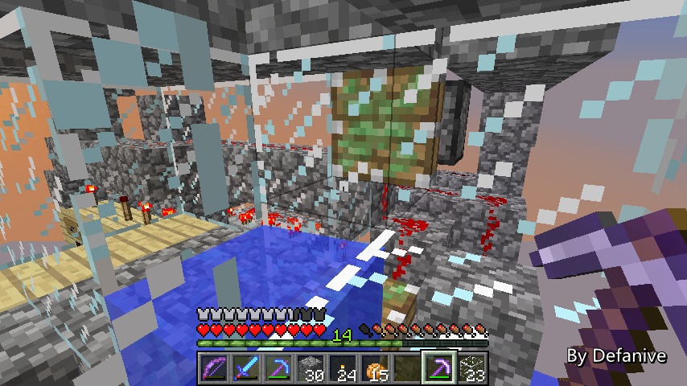
18907楼
2013-07-12 23:52
defanive2
无尽黑夜
14
好了，言归正传，我们来做分类和储存系统吧
首先先对右边进行一个整体的规划
打算是中间一个箱子，上方有物品框说明箱子的内容
当然，并不是全部储存到一个箱子里面
实际上这个箱子会是储存系统的出口，从这个箱子里面可以取物品
但是后方有更多的储存空间
这样即使箱子装不下了，物品仍然会被储存下来
——来自 MCLive
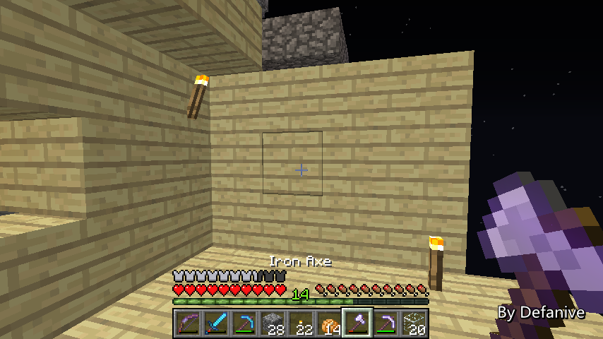
18909楼
2013-07-12 23:57
defanive2
无尽黑夜
14
大致会是这样，当然右边还有更多的箱子
每个箱子都会装不同的产物，因此会有5种：
火药、骨头、箭、腐肉、稀有掉落
自然也要做5个储存和分类系统了
这个是非常艰巨的任务
不过我只会在直播时建造一个
其余的都会在非直播的时候造好
——来自 MCLive
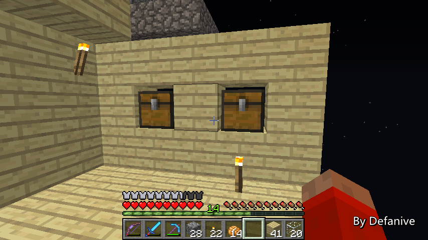
18910楼
2013-07-13 00:02
defanive2
无尽黑夜
14
现在先来创造模式讲解一下这个储存系统
我们的储存系统是做成固定大小，但是又可以随时扩容的
——来自 MCLive
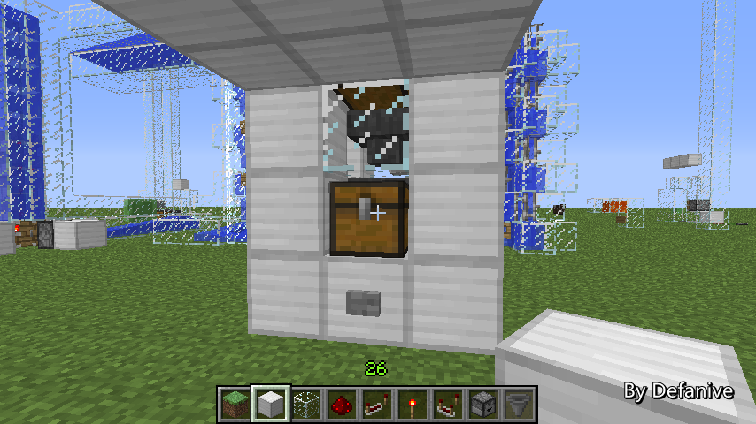
18911楼
2013-07-13 00:04
defanive2
无尽黑夜
14
类似的设计相信大家也见过了
漏斗可以放入/取出箱子矿车的物品
而箱子矿车是可以堆叠的
利用这点，上方的箱子将会是输入箱子
物品输入之后就会被漏斗储存到箱子矿车中
而输出箱子一旦被取出物品，那么漏斗就会从箱子矿车的储存里补充
使用箱子矿车的优点在于，箱子矿车可以堆叠
因此当容量不足时，可以再放几个箱子矿车进行扩容
——来自 MCLive
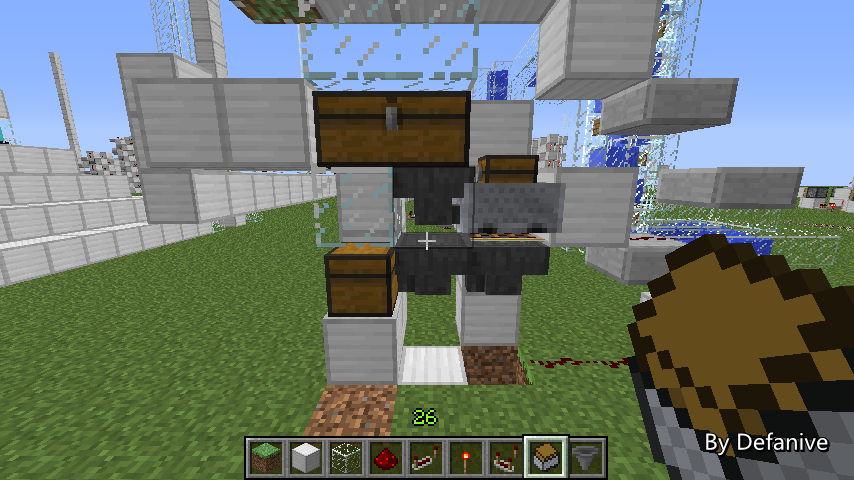
18912楼
2013-07-13 00:07
defanive2
无尽黑夜
14
而下面的按钮作用就是开启\隐藏输入箱子
当我们只需要取物品时，一般只需要从输出箱子取东西即可
但是如果取多了，我们可以重新把多余的物品放入输入箱子里
——来自 MCLive
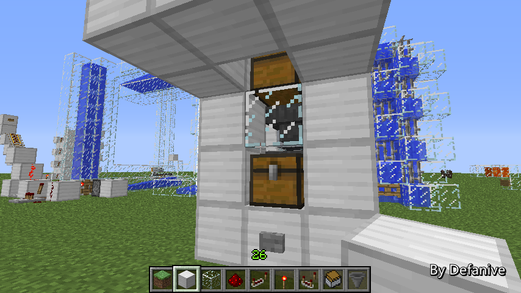
18915楼
2013-07-13 00:08
defanive2
无尽黑夜
14
关于箱子，只有上面是非实体方块时才能打开
因此我们用一个阶梯模拟墙面，而同时仍然能打开箱子
PS 每天都会有新观众回复我
家里的右侧楼梯下的箱子打不开。。
——来自 MCLive
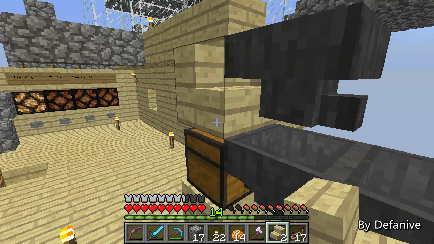
18917楼
2013-07-13 00:15
defanive2
无尽黑夜
14
造出大部分骨干，当然还没放箱子矿车
接下来要做隐藏\开启上方输入箱子的开关
——来自 MCLive
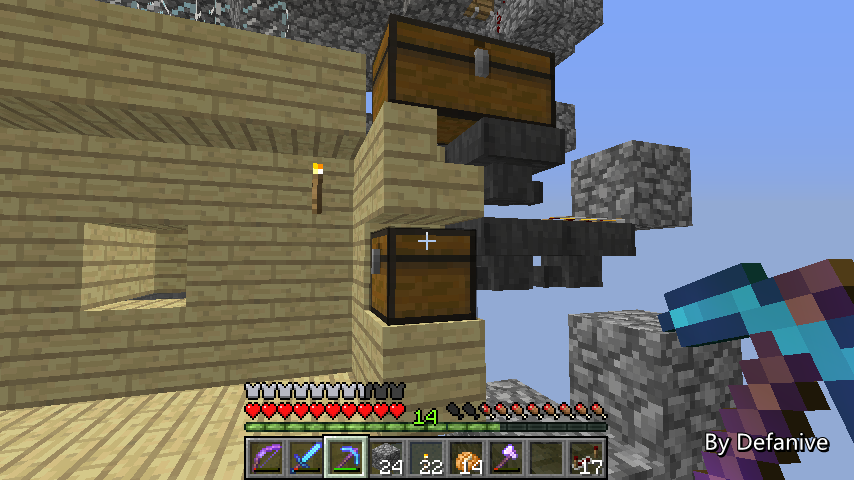
18918楼
2013-07-13 00:17
defanive2
无尽黑夜
14
其实就是一个很简单的活塞装置
把下方按钮的信号缩短到1tick，然后传送给这个活塞
这样按一次按钮方块就会收回
再按一次方块又会伸出
达到了隐藏\开启的作用
PS 为什么最近又突然这么喜欢用按钮呢
其实是觉得拉杆太大了，影响视线
而且用按钮电路也无伤大雅
——来自 MCLive
18919楼
2013-07-13 00:19
defanive2
无尽黑夜
14
把信号缩短之后一路送到上面的活塞即可
身上没有带按钮，顺便也要带一些其他的物资
再回家一次
——来自 MCLive
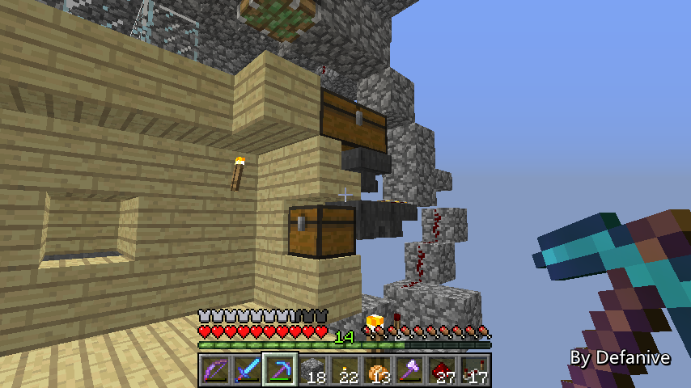
18920楼
2013-07-13 00:22
defanive2
无尽黑夜
14
造了一些按钮后
接下来我们需要造一堆的漏斗
漏斗的耗铁量还是很高的
不过刷铁机鸭梨不大
正好可以消耗一下多余的一堆铁
——来自 MCLive
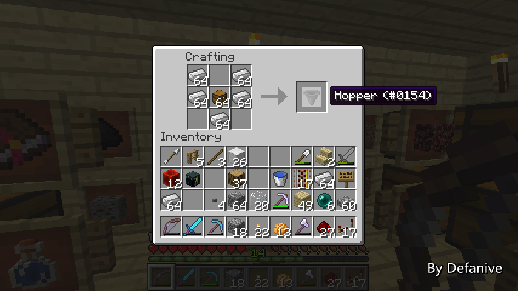
18921楼
2013-07-13 00:25
defanive2
无尽黑夜
14
接下来我们就要把所有物品出口都连接到一起
一共有4个出口：
怪物分离器中僵尸、骷髅被烧死的出口
物品模式中全部怪物被烧死的出口
A口（苦力怕）的出口
B口（全部怪物）的出口
我们需要把这4个出口全部连接在一起
然后进行物品分类
——来自 MCLive
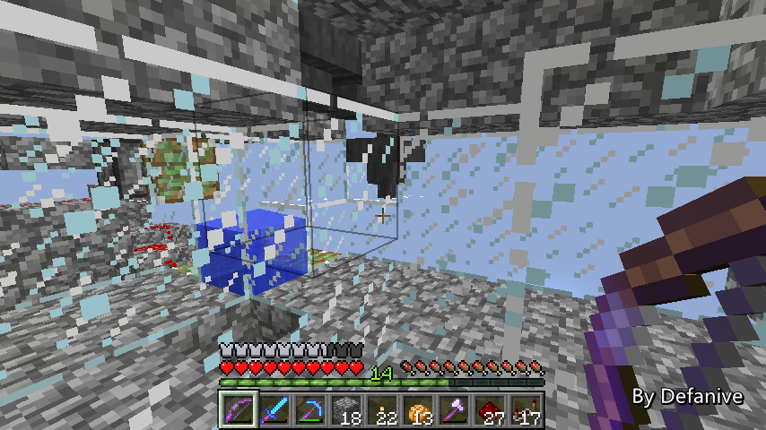
18922楼
2013-07-13 00:30
defanive2
无尽黑夜
14
首先先把分离器的出口和物品模式的出口连接在一起
然后接下来打算连接到A口，再连接到B口
——来自 MCLive
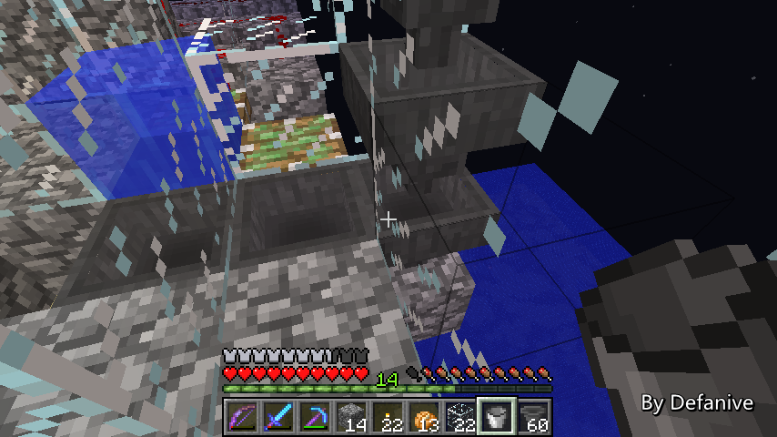
18925楼
2013-07-13 00:36
defanive2
无尽黑夜
14
这样就做到了把全部的物品都输出到一个流水线中
——来自 MCLive
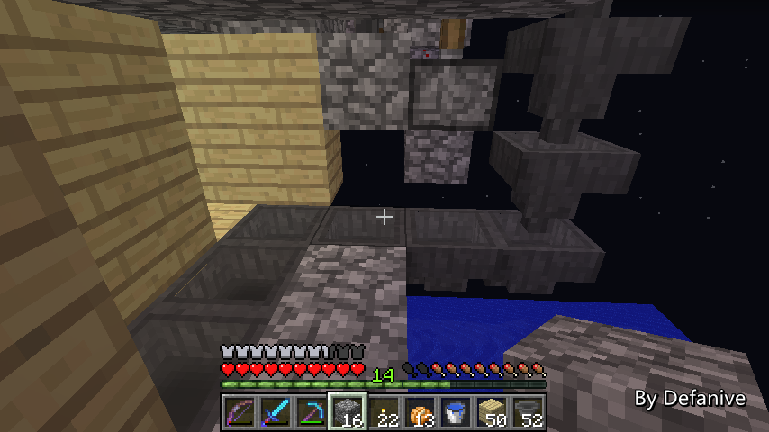
18927楼
2013-07-13 00:39
defanive2
无尽黑夜
14
然后再把物品流水线一路延长出去
这样的目的是为了给分类器腾出空间
——来自 MCLive
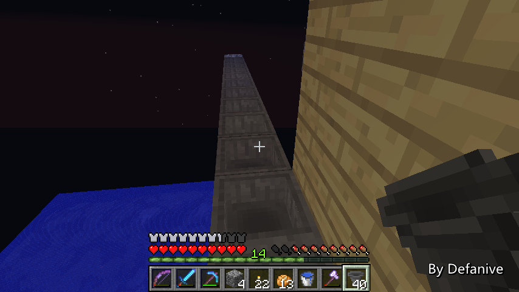
18929楼
2013-07-13 00:43
defanive2
无尽黑夜
14
然后再一路连过来，一直到物品储存系统的后方
接下来就会在这里制造分类装置
并且分类后运送到储存系统里面
——来自 MCLive
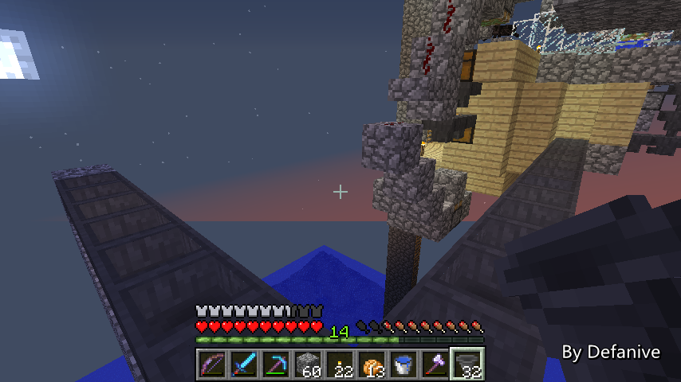
18930楼
2013-07-13 00:44
defanive2
无尽黑夜
14
物品分类器相信大家已经很熟悉了，之前也讲解过
上方的漏斗是过滤器，只有符合的物品才能被收入
当被收入之后，下方的漏斗就会把收入的物品传送到箱子里
具体可以看我稍早的讲解
——来自 MCLive
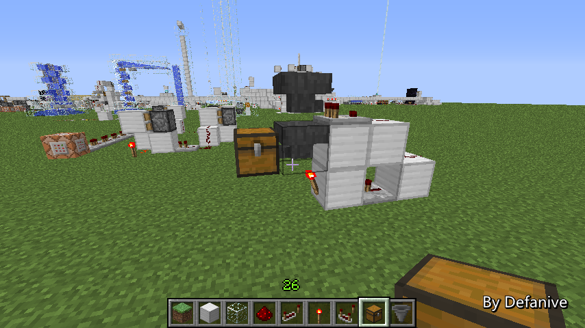
18932楼
2013-07-13 00:47
defanive2
无尽黑夜
14
我们同样也要在流水线这里建造物品分类装置
不过忘记带比较器了，回家取 = =
——来自 MCLive
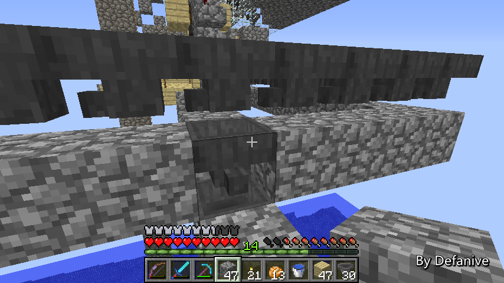
18933楼
2013-07-13 00:51
首页
上一页
251
252
253
254
255
256
256
257
258
259
260
261
下一页
末页